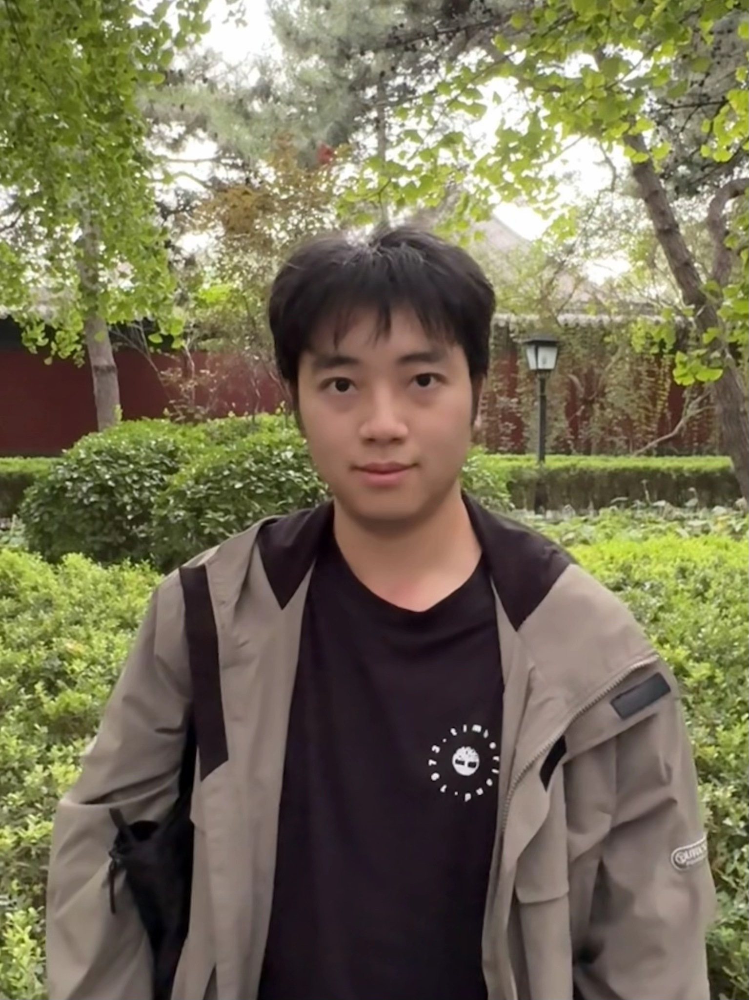
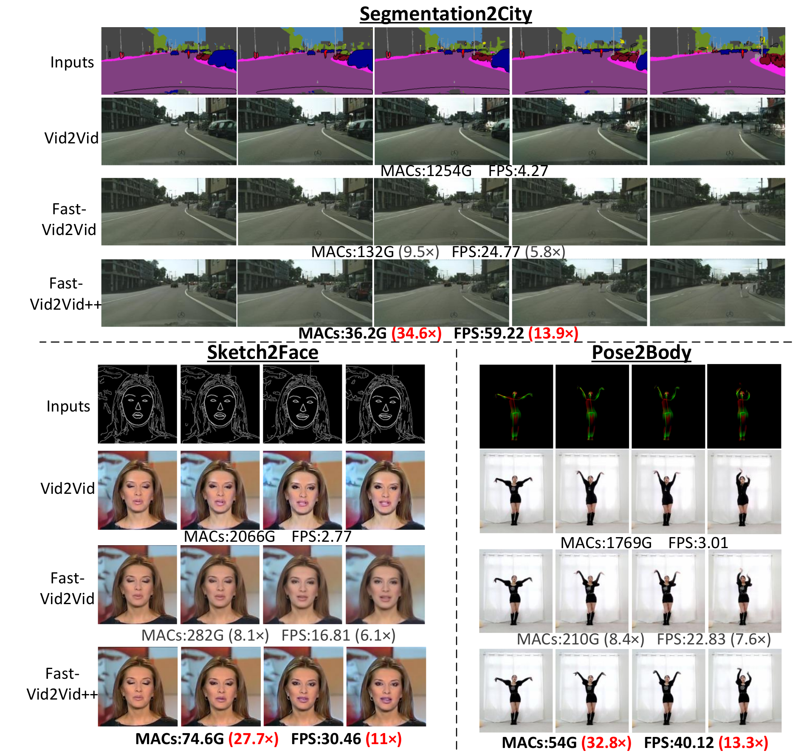
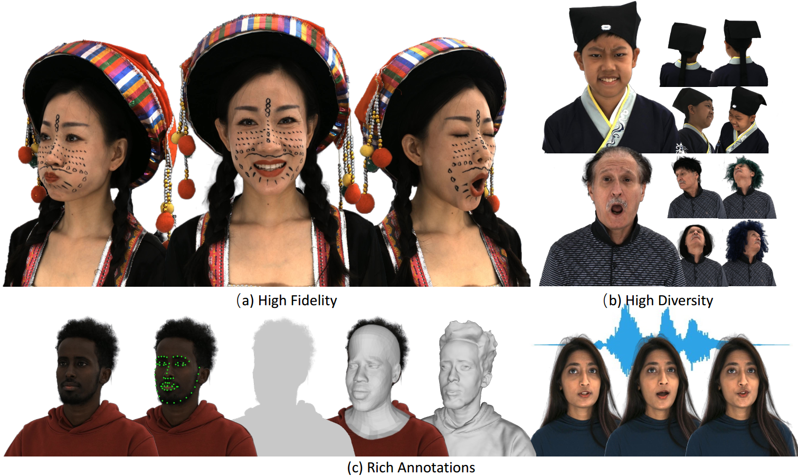
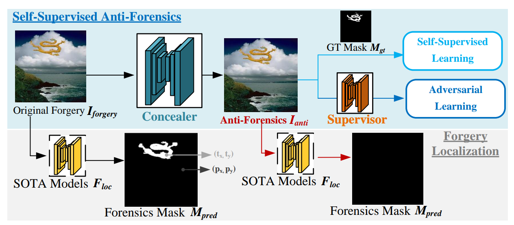
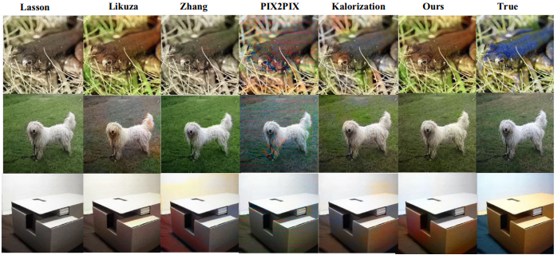
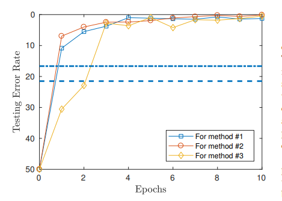
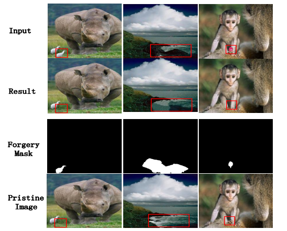

Long Zhuo
Long Zhuo is now a research engineer at Shanghai AI Lab, working closely with Dr. Liang Pan , and Prof. Ziwei Liu .
My research interests include video / 3D / 4D / world model generation, especially in physical-AI generation domain.
email ) if you have any questions.
Email /
Scholar

News
[2025-08] We release 4DNeX .
[2025-08] We release Hi3DEval . [2025-09] Hi3DEval has been accept to NeurIPS D&B 2025.
[2025-03] 1 paper accepted to TDSC 2025.
[2025-01] We release Vchitect 2.0 .
[2024-09] 1 paper (Fast Vid2Vid++) accepted to TPAMI 2024.
[2023-09] 1 paper (RenderMe-360) accepted to NeurIPS 2023 Datasets and Benchmarks Track.
[2022-07] 1 paper (Fast-Vid2Vid) acceted to ECCV 2022.
[2022-05] 1 paper acceted to TIFS.
Your browser does not support the video tag.

Fast-Vid2Vid++: Spatial-Temporal Distillation for Real-Time Video-to-Video Synthesis
Long Zhuo ,
Guangcong Wang ,
Shikai Li ,
Wayne Wu ,
Ziwei Liu
TPAMI , 2024
Your browser does not support the video tag.

RenderMe-360: A Large Digital Asset Library and Benchmarks Towards High-fidelity Head Avatars
Dongwei Pan ,
Long Zhuo ,
Jingtan Piao ,
Huiwen Luo ,
Wei Cheng ,
Yuxin Wang ,
Siming Fan ,
Shengqi Liu ,
Lei Yang ,
Bo Dai ,
Ziwei Liu ,
Chen Qian ,
Wayne Wu ,
Dahua Lin ,
Kwan-Yee Lin
NeurIPS D&B Track , 2023
project page
/
video
/
arXiv
Your browser does not support the video tag.
Fast-Vid2Vid: Spatial-Temporal Compression for Video-to-Video Synthesis
Long Zhuo ,
Guangcong Wang ,
Shikai Li ,
Wayne Wu ,
Ziwei Liu
ECCV , 2022
project page
/
video
/
arXiv
Your browser does not support the video tag.

Evading Detection Actively: Toward Anti-Forensics against Forgery Localization
Long Zhuo ,
Shenghai Luo ,
Shunquan Tan ,
Han Chen ,
Bin Li ,
Jiwu Huang
Arxit , 2023
arXiv
It explores a new problem of anti-forensics against forgery localization and proposes a pratical method to address this issue.
Your browser does not support the video tag.
Self-adversarial training incorporating forgery attention for image forgery localization
Long Zhuo ,
Shunquan Tan ,
Bin Li ,
Jiwu Huang
IEEE Transactions on Information Forensics and Security (TIFS) , 2022
arXiv
A novel framework and training scheme for forgery localization.
Your browser does not support the video tag.

ISP-GAN: inception sub-pixel deconvolution-based lightweight GANs for colorization
Long Zhuo ,
Shunquan Tan ,
Bin Li ,
Jiwu Huang
Multimedia Tools and Applications(MTA) , 2022
MTA
It presents a new lightweight and plug-and-play up-sampling module to alleviate checkerboard artifacts.
Your browser does not support the video tag.

Fake colorized image detection with channel-wise convolution based deep-learning framework
Long Zhuo ,
Shunquan Tan ,
Bin Li ,
Jiwu Huang
Asia-Pacific Signal and Information Processing Association Annual Summit and Conference (APSIPA ASC) , 2018
APSIPA ASC
Your browser does not support the video tag.

HCF-Net: Hybrid Coarse-to-Fine Network for Forgery Reconstruction
Long Zhuo ,
Shunquan Tan
SSDL Workshop at the International Joint Conference on Artificial Intelligence (IJCAI w) , 2021
Workshop


{kind=link}